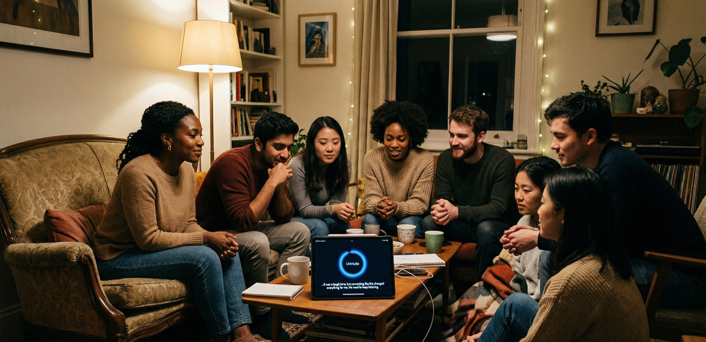

Surface connections
Feeling drained by superficial small talk and endless social performance is more common than most people admit. Many of us are craving conversations that actually land.
Unmute hosts small, guided storytelling circles for people who want something slower, warmer, and more honest than the usual social surface. Structured sharing, careful listening, and a room that knows how to hold a real story.
Modern life often trades depth for small talk. We built Unmute to make room for honest stories, deliberate listening, and real human connection.
Feeling drained by superficial small talk and endless social performance is more common than most people admit. Many of us are craving conversations that actually land.
Hiding parts of yourself so interactions feel easier can be exhausting. It leaves important stories unopened and relationships flatter than they need to be.
You want to be heard without explanation or performance. We host a room where your story matters on its own terms, and where listening is treated like care instead of background noise.
Every session is structured enough to feel safe and open enough to feel human. The point is not perfect sharing. The point is that the room can actually hold it.
Read the full formatPick a circle that resonates, whether you want to speak or simply listen your way in.
Each group is intentionally limited so people are not competing for volume, speed, or emotional airtime.
A facilitator holds the pace, the boundaries, and the transitions so stories do not get rushed or talked over.
Reflection replaces fixing. The room closes gently, with enough care that the conversation keeps its shape.
Captions, one-speaker flow, careful pacing, and no interruptions are not extras. They are what make conversation feel calmer, clearer, and more dignified for everyone in the room.
Optional live transcription supports comprehension and shared attention without changing the tone of the room.
Facilitators protect turn-taking so stories can be heard in full, without overlap or cross-talk.
Respectful pacing creates a calmer environment where people do not have to oversell themselves to be understood.
Sessions are not recorded by default. Stories stay in the room instead of becoming content.

Each circle is themed and curated. The live schedule below stays current with the booking backend, but the atmosphere always stays intentionally small.
We are fetching current circles from the booking backend.
Unmute began from a simple conviction: people are not short on stories, they are short on rooms that know how to hold those stories with enough patience, warmth, and structure.
We are not a clinic or a therapy service. We are a curated community built around guided attention, careful pacing, and the belief that honesty lands differently when it is not rushed.
“Silence should be a choice, never a consequence.”Read more about Unmute